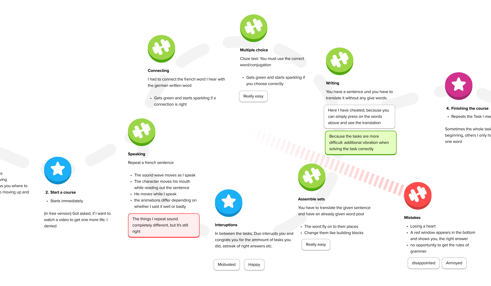
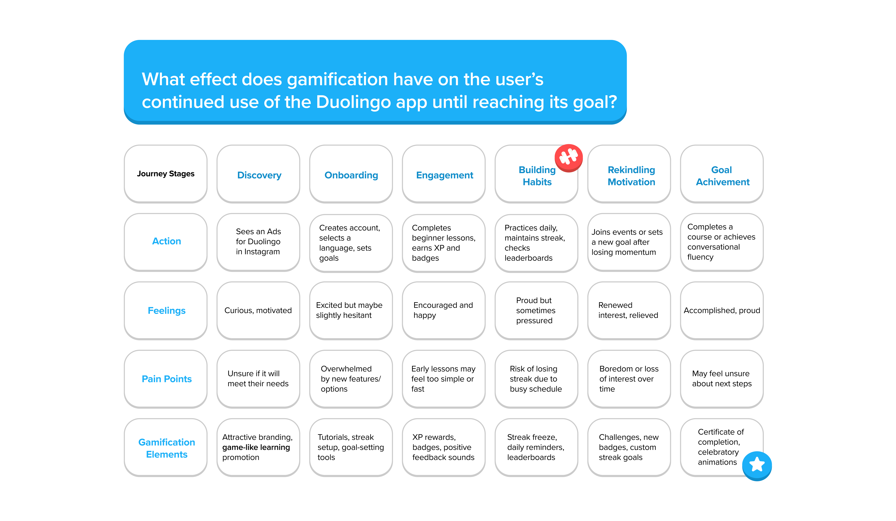
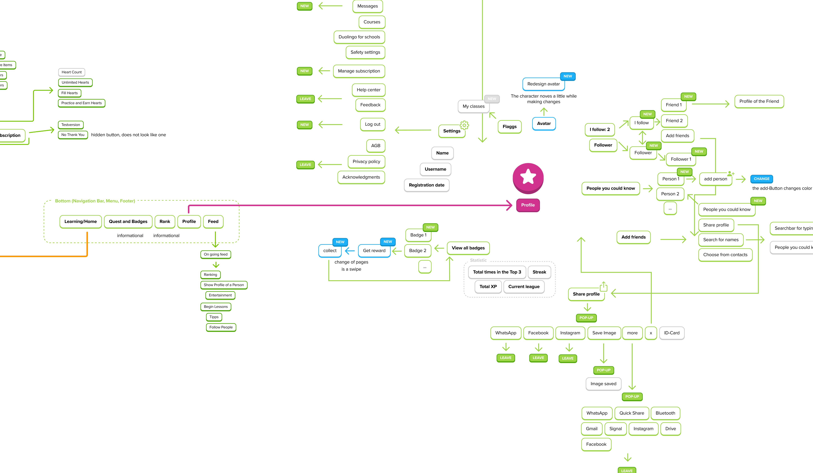

ABOUT THE PROJECT
process
Ideation
The selection of our general topic happened relatively quickly. After a short presentation on microinteractions, we collectively decided on the topic of gamification. However, the next steps proved to be more challenging: we needed to narrow down the subject, choose a suitable app or platform, and formulate a research question.
Our first choice was the language-learning app Duolingo. From this, we developed our initial research question: What factors make Duolingo’s gamification strategy so successful in terms of user engagement, learning outcomes, and long-term motivation?
However, this question evolved further over the course of the project.
First Shift in Direction
Following our initial concept presentation and the feedback we received, we realized that a traditional redesign would not be the best approach. Duolingo itself conducts extensive studies to optimize its gamification strategy, meaning our impact in this area would have been minimal.
Instead, we opted for a scrollytelling format that analyzes and visualizes Duolingo’s design elements to illustrate how they function. Additionally, we were advised to take a more critical perspective on the topic. This approach was further reinforced after participating in the Expectations/Oppositions workshop with Jordi. We decided to integrate these new perspectives through a flowchart, allowing users to choose which aspects of the critique they wanted to explore in more depth.
Second Shift in Direction
A recurring challenge throughout our project was its scope. Gamification offers many fascinating perspectives, and we would have liked to incorporate all of them. However, to clarify the core message of our project, we decided to focus exclusively on Duolingo’s gamified elements.
This also meant abandoning the flowchart as a representation method to keep the content more straightforward and direct. Instead, we concentrated on highlighting the most relevant aspects of gamification in a clear and structured manner.
Design Rationale
For our scrollytelling format, we closely followed Duolingo’s visual language and design. The feedback on this approach was mixed: some found it effective because it presented the content in a style consistent with the analyzed app, while others criticized it for resembling an official Duolingo page too closely and lacking originality.
After internal discussions within our team, we ultimately decided to maintain this design choice. Our key arguments were:
- Authentic representation of the topic: By aligning with Duolingo’s familiar visual style, we make it easier for users to engage with the content and navigate intuitively.
- Enhancing gamification through visual coherence: The immersive nature of our project is reinforced by the recognition of familiar UI elements.
- Illustrating core mechanics: Since we analyze how Duolingo employs gamification, it makes sense to reflect these elements visually as well.
Why Is This Project Relevant?
Duolingo is a fascinating app that operates on multiple levels. In both our surroundings and our own experiences, we have observed how seamlessly it integrates into daily life and the strong appeal it holds for users.
As designers, it is particularly interesting for us to understand why gamification mechanisms are so effective and how they can be strategically applied to increase engagement. Our project aims not only to analyze what works well in Duolingo but also to highlight the challenges and criticisms that come with a heavily gamified learning platform.
ABOUT THE COURSE
methodes
In the course, we looked at three methods that are used to analyze an app/platform. We will now briefly show whether and how we used them for our project:

Auto-Ethnographie
This method focuses on observing what you do, when, how and why. We didn't gain many insights, but it helped us to really engage intensively with the App and not just analyze it superficially.

User Journey
The user journey helped us a lot with the second question. For us, the method was ideal for identifying pain points, but also for seeing at which points users are motivated to use and continue learning in the app.

GUI-Ripping
The GUI ripping can also be found in our CaseStudy. This method was also the most helpful for us, as it allowed us to precisely map out all the interactions etc. It helped us to uncover patterns and connections that we might not otherwise have recognized.
Relevance of the Course Content for Our Final Project
The course provided us with valuable methods and insights that directly shaped our project. Through auto-ethnography, we engaged deeply with Duolingo and critically reflected on our own interactions with the app. User journey mapping helped us identify key pain points and motivational triggers, while GUI ripping allowed us to systematically break down the interface and uncover patterns that informed our analysis.
Beyond these methods, the lecture on microinteractions and the general focus on deconstructing interfaces aligned perfectly with our research goals. The technical input on Scrollama and D3.js was particularly useful, as it enabled us to implement our scrollytelling format effectively. These combined insights not only structured our research but also influenced the final design and presentation of our project.
reflection
We were able to decide on the topic of gamification relatively quickly. Choosing Duolingo as the focus of our project was also quickly clear. However, it was always a problem for us to ensure that the project didn't become too big. Duolingo is perfect for a case study and, above all, for a really comprehensive one. It was challenging to agree on focus points and to keep an eye on them at all times. Sometimes it was also very frustrating to work on research that was completely discarded or concepts such as the flowchart that were not implemented simply because the project would otherwise have overwhelmed us.
All in all, we are quite satisfied with our project, which perhaps needs a little more depth in a few places and it is also a shame that the experience on the smartphone is not so optimal.
Nevertheless, it was a good and important project for all three of us and really exciting to deal with individual elements at this level.